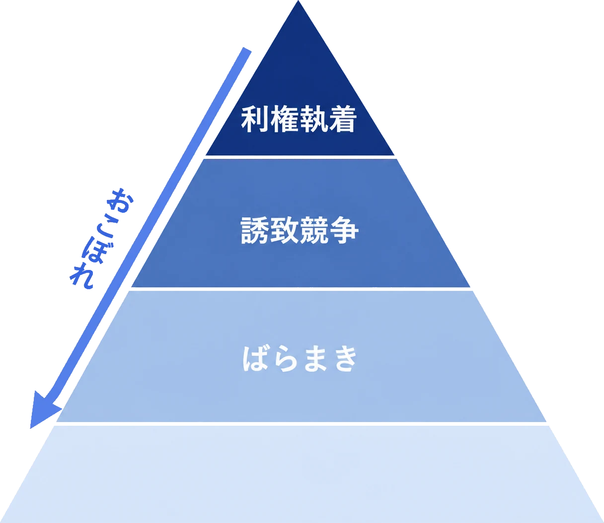

成熟期の政治システム
01
その昔、日本が高度成長していたころ
経済成長にしたがい
どんどん税収は増え
政府には想定以上の
お金が積み上がりました。
大金が余っていたから…
黙ってつ
いて来い
いて来い

政治家はそれを
地方に配分し、
地方の首領はそれを
配下に再配分できました。
庶民は黙って上の差配に
したがうだけで
幸せに暮らせたわけです。
02
成長期を終えた成熟社会だと
余資はどんどん
減っています。
一方で、高齢化により
医療費や介護、看護など
政府の支出は増え続けます。
少子化対策まで加わり、
歳出は増える一方。
この状態で、かつての
｢おこぼれ分配｣を続けたら
どうなるでしょう？
それは赤字国債となり、
結果、円安が進み、
日本はますます
貧乏になります。
03
だから､仕組みを組み替えましょう！
| 項目 | 旧来 | 目指す形 |
|---|---|---|
| 意見集約 | 一方通行 上意下達 | 双方向 ダイナミズム |
| 社会参加 | 分業型 性別役割分担､高齢者排除 | 参加型 皆が得意分野を持ち寄る |
| 役割分担 | 全員一律 | 適材適所 |
| 政策費用 | 高コスト | 低コスト |
| 分配額 | 声を上げた人のみ | 必要な人に必要な分 |
| まとめ | × 上意下達 × 限られた人だけ | 〇 力を合わせ 〇 必要な人に必要な分 |
04
私たちのユニークさ
①原則､代替財源を先に見つけ､政策提案をする
（カット可能な予算と交換に政策を提案します）
②コスパ重視。旧来構想の3倍以上なら財源不問
（コスパ良い案に限り、代替財源なくても提案しちゃう）
③かつてない提案を基本とする。
（お役所は｢まず前例｣。過去にない提案こそしようよ）
④脱利権、脱誘致、脱ばらまき
（ぜ～んぶ、ゼロサム時代にはそぐいません）
⑤「しがみつく政治」との決別
（同一選挙区3選禁止、75歳完全定年制）
⑥ヨコよりウエを目指す
（市区町村議員→都道府県議員。都道府県議員→国会議員）